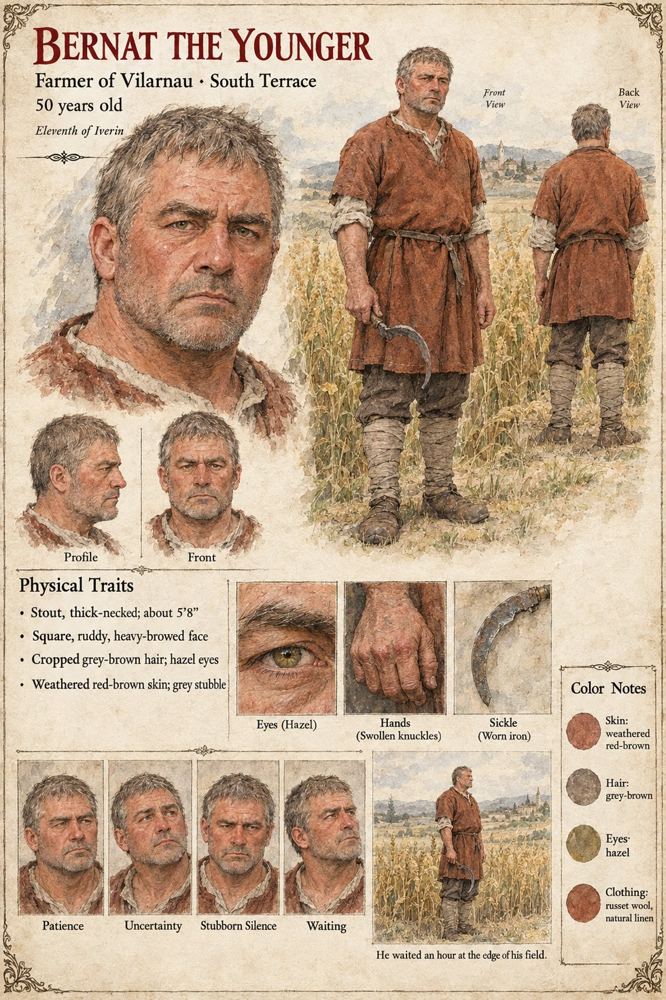

Bernat the Younger
Farmer of Vilarnau with a field on the south terrace · 50 years old · the eleventh of Iverin
A farmer of Vilarnau, a stout man of fifty with a field of his own on the south terrace, who stands at the edge of it on the evening of the eleventh of Iverin with a sickle in his hand and his wife at his elbow, for an hour, and does not cut. When his wife asks him why, he says that he is waiting for somebody to tell him whose it is. It is not an answer, the manuscript says; it is an accounting. Both altars have named a price, and he has worked out, as plainly as any bailiff, that he is being asked to choose between a granary and a grave: the Order will enter his name in the Book if he cuts or carries without receipt, and the hearth-priests of the Threefold will withhold christening, marriage and funeral blessing from any house that sells the Son's grain into a grey box.
The manuscript does not say what he does when the hour is over, though the millet is cut in the end, in the last week of Jorren, in the rain, by whoever has a sickle and no priest. He is not Old Bernat, the reeve who says Fossa on the green and whose page is in Case 2231; the manuscript does not say whether the two are kin, and the pages are kept apart. It gives the Younger his age, his build, his terrace and his hour. The sheet's thick neck, square ruddy heavy-browed face, cropped grey-brown hair, hazel eyes, weathered red-brown skin, grey stubble, swollen knuckles and russet tunic are its own.